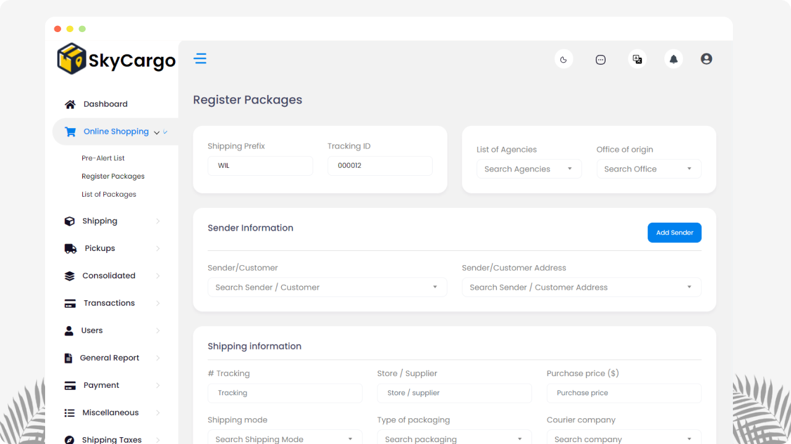
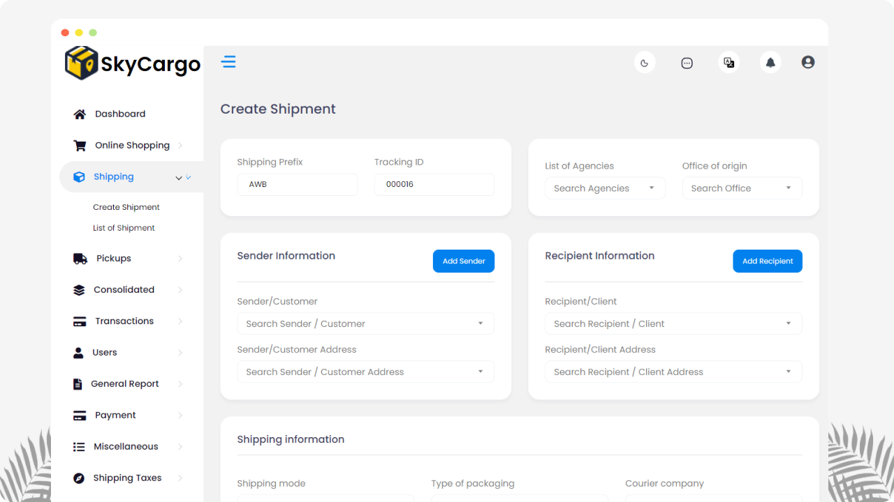
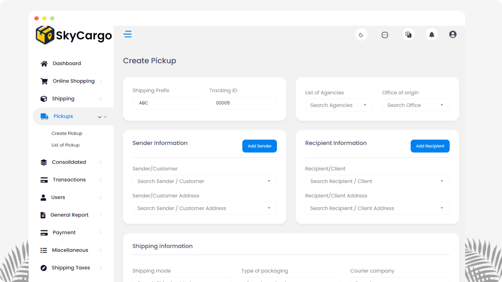
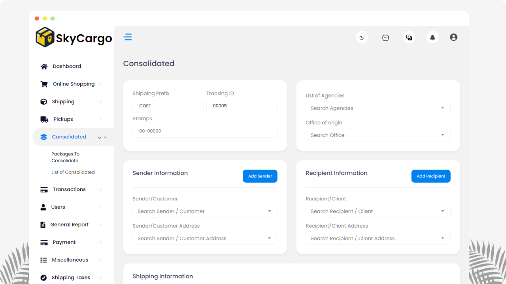
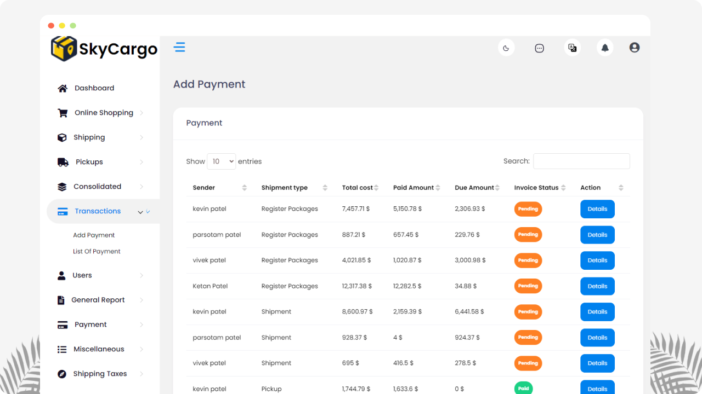
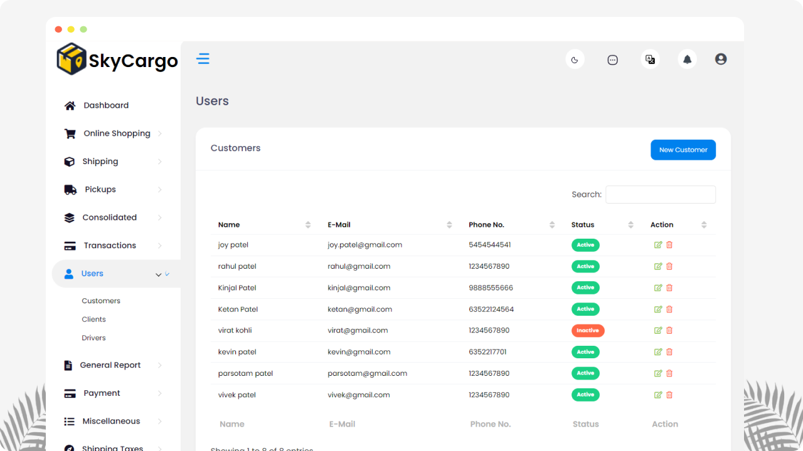
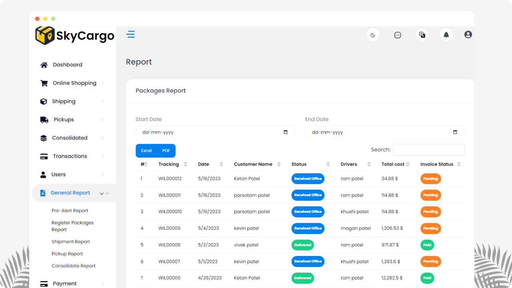
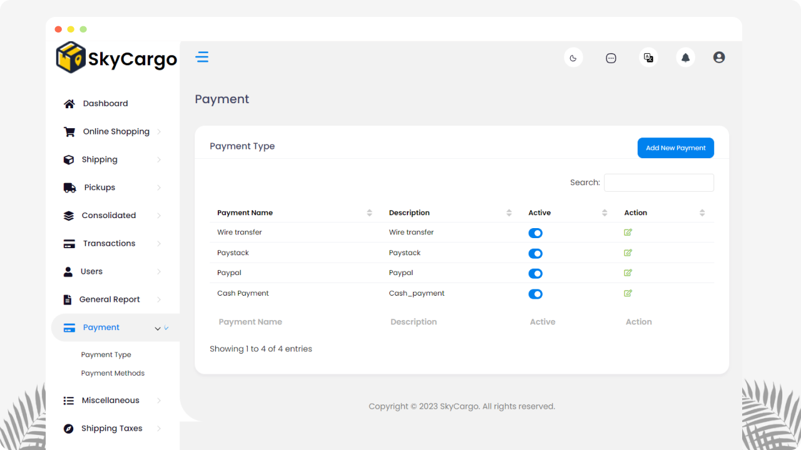
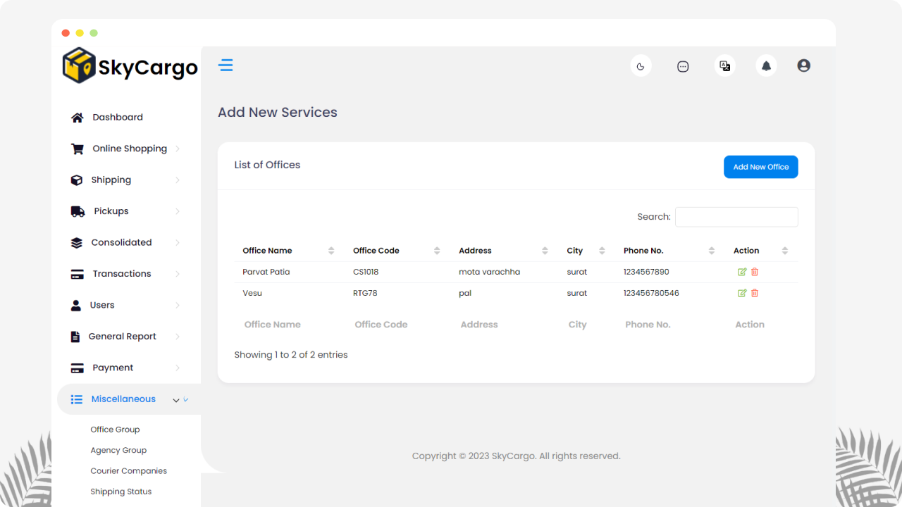
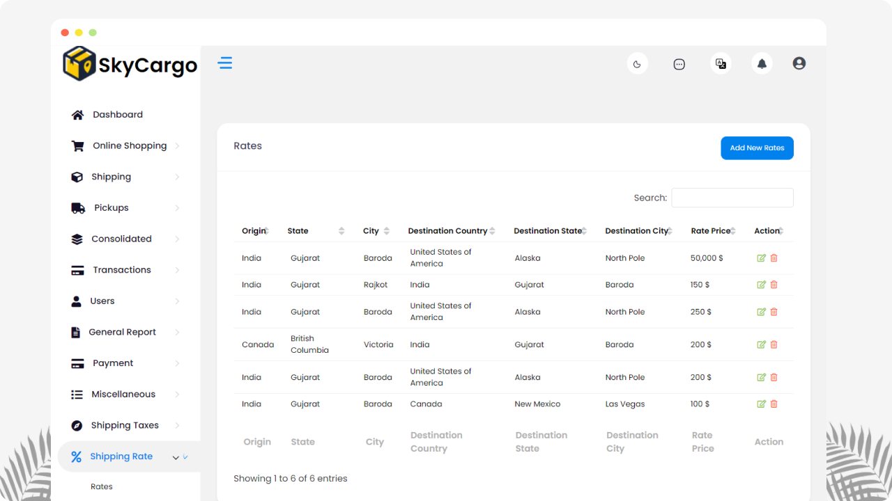

- Updated : 18 July 2023
- Contact Our Support Team Email: cherrystuart83@gmail.com
- Skype: KMS Agency
Introduction
Thank you for your interest in SkyCargo.
An integrated transportation system for freight shipping, courier services, and logistics is essential for any business that relies on the timely delivery of goods. Such a system can help streamline operations, reduce costs, and improve customer satisfaction by providing reliable and efficient transport of goods. One of the main benefits of such a system is the ability to track shipments in real-time, allowing businesses to better manage inventory and provide accurate delivery estimates to customers. This helps to ensure timely deliveries and reduces the risk of lost or stolen packages.
Another key advantage of an integrated transportation system is the ability to optimize routes and schedules for maximum efficiency. By combining different modes of transportation, such as air, sea, and land, businesses can minimize costs while maintaining high levels of service. Additionally, a well-designed system can help reduce the environmental impact of transportation by minimizing empty trips and reducing fuel consumption.
In order to implement an effective integrated transportation system, businesses must partner with experienced logistics providers who can offer a wide range of services and expertise. These providers should have a deep understanding of the industry and be able to tailor solutions to meet the specific needs of each client. With the right partner, businesses can enjoy the benefits of a reliable, efficient, and cost-effective transportation system that meets the demands of modern commerce.
Shipping Rate
Shipping rate refers to the amount charged for transporting goods from one location to another. Shipping rates can vary based on a number of factors, such as the weight and size of the item being shipped, the destination it is being sent to, the shipping method chosen, and any additional services requested (such as expedited shipping or insurance). In general, shipping rates are calculated based on a combination of these variables and may be structured as flat fees, tiered pricing, or based on actual shipping costs. The shipping rate may also include any applicable taxes or surcharges.
Shipping
Shipping refers to the process of transporting goods from one location to another. This can involve moving products from a manufacturer or supplier to a retailer, distributing products to individual customers, or transferring inventory between different warehouses or storage facilities. The shipping process typically involves a variety of steps, including packaging and labeling items for transport, arranging transportation services, tracking shipments as they move through various stages of the delivery process, and ensuring that goods are delivered to their intended destination on time and in good condition. There are many different modes of transportation used for shipping, including trucks, ships, trains, and airplanes, and each has its own unique advantages and limitations depending on the type of cargo being transported and the distance it needs to travel.
Consolidated
- Consolidated shipping, also known as freight consolidation, involves combining multiple smaller shipments from different sources into a larger shipment that is sent to a common destination. The purpose of this approach is to reduce the overall shipping costs and improve efficiency in the logistics process.
- When businesses use consolidated shipping, they typically work with a third-party logistics provider (3PL) who specializes in consolidating freight. The 3PL will take care of the entire logistics operation, including coordinating with different suppliers to collect the individual shipments, consolidating them into a single shipment, and delivering the final shipment to the destination.
- There are several benefits to using consolidated shipping. First, it allows businesses to save money on shipping costs by reducing the number of individual shipments and taking advantage of bulk rates. This can be especially beneficial for small businesses that may not have the volume of shipments necessary to qualify for discounted rates.
- Second, consolidated shipping can help streamline the logistics process, reducing the burden on internal resources and freeing up staff to focus on other critical business operations.
- Finally, consolidated shipping can also help businesses reduce their carbon footprint by minimizing the number of individual shipments and thus reducing overall transportation emissions.
- Overall, the consolidated feature is an important tool for businesses looking to improve their shipping operations while keeping costs under control. By working with a qualified 3PL provider, businesses can take advantage of this approach and reap the benefits of more efficient, cost-effective shipping.
Notification
- Notifications are an important tool for keeping customers, clients, and drivers informed about the status of their shipments. These alerts can be sent via various channels such as email, text message, or push notifications through a mobile app.
- In the logistics industry, notifications may include updates on the shipping status, estimated delivery times, delays, or changes to the shipment's route or destination. For example, a customer might receive a notification when their package has been picked up by the carrier, when it reaches a sorting facility, when it is out for delivery, or when it has been delivered to its final destination.
- Notifications can also be customized based on the preferences of the recipient. For instance, some customers may prefer to receive regular updates throughout the shipping process, while others may only want to be notified if there is a delay or issue with their shipment.
- The use of notifications can help improve customer satisfaction by providing timely, accurate information about the status of their shipments. It can also help reduce the number of inquiries or support requests related to the shipment, as customers will have access to real-time updates via their preferred communication channel.
- Overall, notifications are an essential feature in modern logistics operations, enabling businesses to keep their customers, clients, and drivers informed and engaged throughout the shipping process.
Basic
As SkyCargo is a complete system with lots of modules for web , it is compulsory to have some basic knowledge in server side if you want to do the installation.
- Real server Server related knowledge like apache or local machine server, we preferred to use a real server.
- Server related knowledge and we preferred cPanel in your server for quick installation
- basic knowledge about google cloud and firebase.
warning
The Envato price don’t included any kind of installation and deploy support. You need to follow the documentation step by step for installation, setup and other branding related changes. We are not responsible for your mistake. Also if you do any kind of customization it is totally your responsibility.
Server
Require For Setup Node js And Run Properly.
- SkyCargo require node js version 16 and above.
- Require Node Module Folder
warning
Please do this very carefully. We will not be responsible for your mistake.
Must Required Sub Domain
Our code is designed to be fully compatible and supported only on subdomains, such as https://subdomain.yourdomainname.com. It cannot be installed on the root domain or any additional paths, like https://www.yourdomainname.com/admin. Additionally, it is not compatible with localhost or any private DNS zones.
Install on server
1. Database Configuration
Before starting the admin installation, database must be configured for the application.
For creating the database, the following ways must be maintained-
- Go to MySQL Databases
- Create a new database for the application

- Create a user for the database
warning
Avoid using hash ("#" or "$") in your password
- Add the user to the database

- Give privileges to the user

Node Js Web App
Prerequisite
Environment Setup
You have to download and setup node js from nodejs.org. You can follow documentation with your own device.
Installing Node js
tip
Recommended link is here -
Great!! As now you have installed the NodeJs successfully, now you just have to install NPM or Yarn. Below we have given the easy documentation.
Installing npm
tip
You can check the official documentation -
https://docs.npmjs.com/downloading-and-installing-node-js-and-npm
sudo apt install -g npmAnd,
Installing Yarn
tip
You can check the official documentation -
https://classic.yarnpkg.com/lang/en/docs/install/#debian-stable
npm install --global yarnMandatory Setup (Web)
1. Add Twilio Account Details For Getting SMS
To get the Twilio Auth Token, Phone Number, and Account SID, you will need to follow these steps:
- Go to the Twilio website and sign up for an account if you haven't already done so.
tip
You can Register On Twilio Here
- Once you are signed in, go to the console dashboard. Here you will see your Account SID and a button to reveal your Auth Token.
- To get a phone number, click "Phone Numbers" in the navigation bar, then select "Buy a Number". You can choose from a variety of phone numbers from different countries and regions.
- Follow the prompts to purchase a phone number and assign it to your project.
- After purchasing a phone number, you can find it under the "Active Numbers" section in the "Phone Numbers" tab of the console.
Note that the Auth Token is a sensitive piece of information, and you should never share it with anyone. Keep it safe and secure. Additionally, make sure to use your purchased phone number according to Twilio's terms of service and applicable laws and regulations.
2. Onesignal Web Push Notification
tip
You can Register On Onesignal Here
- Sign up for a free account on the OneSignal website.
- Once you are signed in, create a new app and select "Web Push" as your platform. You will be prompted to enter some basic information about your app.
- After configuring your web push settings, download and install the OneSignal SDK into your website code. You can find detailed instructions on how to do this in the OneSignal documentation
tip
Web Push Onesignal Notification
https://documentation.onesignal.com/docs/web-push-quickstart
It's important to note that web push notifications may not be supported on all browsers and devices, so it's a good idea to test your implementation thoroughly before launching it to your users. Additionally, you should always respect users' preferences and only send notifications that are relevant and valuable to them.
3. SMTP Setup
To obtain SMTP configuration information including the host, port, username, and password, you will need to contact your email service provider. The exact steps to do this may vary depending on the provider, but in general, you should be able to find this information in your email account settings or by contacting your provider's customer support.
Here are some basic steps you can follow to find your SMTP configuration information:
- Log in to your email account using your email client or webmail interface.
- Look for the "Settings" or "Preferences" option in your email account menu.
- Find the section on SMTP (outgoing) server settings. This may be labeled as "SMTP Server," "Outgoing Mail Server," or something similar.
- Here, you should see the hostname or IP address of the SMTP server, as well as the port number used for outgoing mail. You may also see options for authentication and encryption, which will determine whether you need to provide a username and password, and whether the connection is secured with SSL/TLS.
- If you cannot find the SMTP configuration information in your account settings, you may need to contact your email service provider's customer support. They should be able to provide you with the necessary details to configure your email client or application.
Remember to keep your SMTP credentials secure and not share them with anyone else.
tip
Recommended tutorial is below for cpanel with have setup node js 👇
Site Build and Deploy
1.Deploy in Your Own Server Like Vps Or Dedicated Server
1.1 Package Installation
To install node_module , run the following command
npm install Mandatory
Make sure you have node_modules installed in your directory.
The above command will install all the node modules in your directory.
1.2 Project Run On background
-
Install PM2 in your server
npm install pm2 -g -
To run the site in your server, you have to run the PM2 command given below
pm2 start npm --name "`YOUR_PROJECT_NAME`" -- start -
To re-deploy your site after some changes, you must run the following commands
pm2 delete "YOUR_PROJECT_NAME" pm2 start npm --name "YOUR_PROJECT_NAME" -- start
MANDATORY
Must follow the above instructions
2.Deploy to Vercel
Deploying a Node.js app to Vercel is a fairly straightforward process, and can be done in just a few steps.
Here's what you'll need to do:
-
Sign up for a Vercel account.
tip
Web Push Onesignal Notification
-
Install the Vercel CLI by running the following command in your terminal:
npm install -g vercel -
Navigate to the root directory of your Node.js app and run the following command to initialize your Vercel project:
vercel init - Follow the prompts to link your Vercel account and select your project.
-
After the initialization is complete, run the vercel deploy command to deploy your app to Vercel:
vercel deploy - The deployment process will begin, and you'll be given a URL where your app can be accessed once it's deployed.
That's it! Your Node.js app should now be up and running on Vercel. If you need to make any updates or changes, simply push your changes to your code repository and Vercel will automatically redeploy your app.
Features information
-
Dashboard:
The dashboard feature in SkyCargo is a central hub that provides users with an overview of their shipping activities and allows them to manage shipments, orders, and other important data. The dashboard is designed to be user-friendly and easy to navigate, providing users with a visual representation of the most important information related to their shipments.
-
Pre Alert:
Shipping pre-alert is a feature that allows a shipping company to notify the consignee or recipient of an upcoming shipment. It provides advanced notice of the shipment, giving the recipient time to prepare for its arrival.

-
Shipping:
Shipping is the process of transporting goods or products from one location to another. Shipping features in a management system like SkyCargo typically include tools and functions that help businesses manage and optimize their shipping processes.

-
Pickups:
The pickup feature is a tool that allows businesses to schedule pickups for their shipments directly from their location. With this feature, businesses no longer have to worry about dropping off packages at a carrier's location or waiting in long lines to ship their products.

-
Consolidated:
The consolidated feature is a tool that allows businesses to combine multiple shipments into a single shipment for more efficient and cost-effective shipping. With this feature, businesses can save money by reducing the number of individual shipments they need to make, while also streamlining their logistics operations.

-
List of payment:
Payment processing involves securely collecting payment information from the user, verifying that the payment details are correct, and authorizing the transaction.

-
Customer/Client/Driver:
In a shipping management system like SkyCargo, there are typically three main roles: customer, client, and driver.

-
Reports:
This report is used to provide advance notice to carriers and customs agents about incoming shipments. It typically includes information such as the shipper and consignee details, package dimensions, weight, value, and any special handling instructions.

-
Shipping Taxes & fees:
Shipping taxes are government-imposed charges that are added to the cost of shipping goods. These taxes can vary depending on the country or region where the shipment is being sent from and where it is being delivered to.

-
Shipping Rate:
Shipping rates are the charges that are applied by carriers or logistics providers for transporting goods from one location to another.

-
Notification:
Notifications are alerts or messages that are sent to customers, clients, or drivers to keep them informed about the status of their shipments.
-
Setting:
Settings are configurable options that allow businesses to customize the behavior and functionality of their shipping management system.



Outro
Thank you for your purchase. If you have any questions that are beyond the scope of this help file, please contact us through cherrystuart83@gmail.com
Once again, thank you so much for purchasing this script. As I said at the beginning, I'd be glad to help you if you have any questions relating to this script. No guarantees, but I'll do my best to assist. If you have a more general question relating to the script, you might consider visiting the forums and asking your question in the "Item Discussion" section.